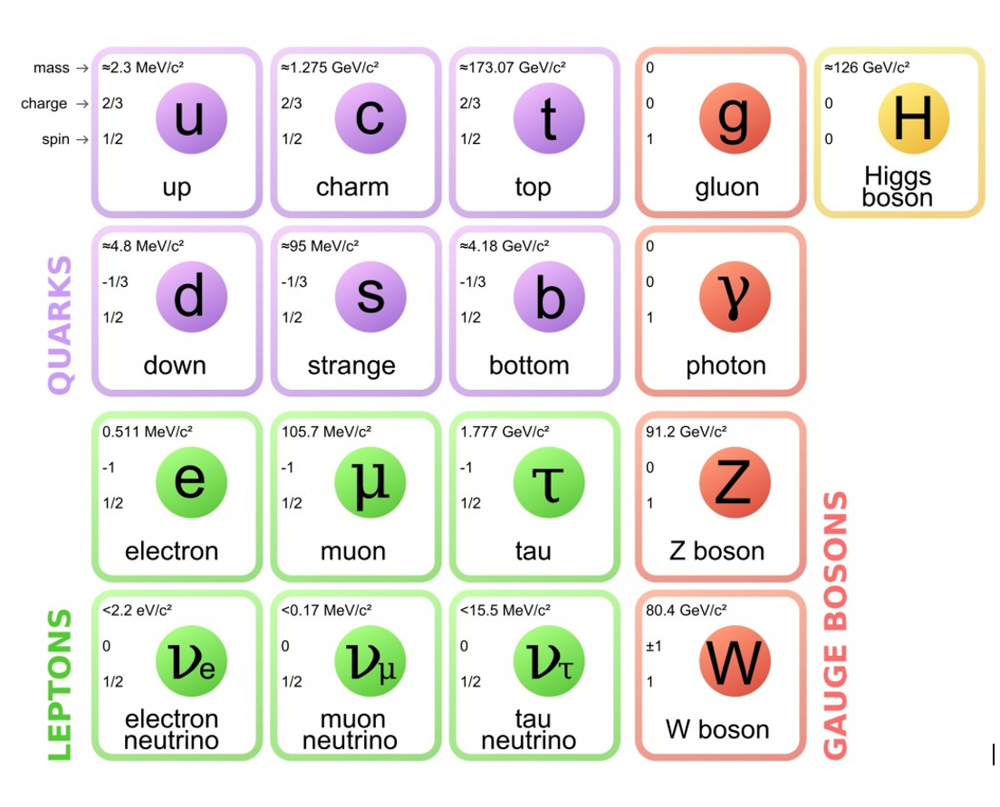

PHY304: Particle Physics#
Lecture notes for the adademic year 2024/25
by Davide Costanzo
Department of Physics, University of Sheffield
V1.0: 28 June 2024, Sheffield, UK
{kind=link}
In this course, we will explore the properties of the basic building blocks of the universe. Many of the topics you have previously studied - solid state physics, thermodynamics, etc - deal mainly with the properties of large ensembles of atoms, interacting only through the charge of their electrons. Here we will consider how small numbers (e.g. 2 or 3 ) of apparently fundamental objects interact. We will also deal with energies large compared with the rest-mass energies of the particles, where special relativity is important and new types of interaction are possible, involving the creation of additional or different particles.
The universe we observe today appears to be built from only 4 constituents, protons, neutrons, electrons and photons, plus the mysterious “dark matter” which apparently dominates the universe’s structure. However the picture is much more complicated with hundreds of different particles existing in nature, even if for a short period of time
Historically, conducting experiments at high energies led to a plethora of new species of particles, larger than the number of atomic elements, which might not appear to suggest that anything very fundamental was being observed. However, like the periodic table, these particles had common features revealing an underlying structure, and during the last 40 years the particles and their interactions have been understood in great depth. We cannot claim that all the mysteries have been solved - there is still much fascinating research in progress - but we now know that the number of fundamental matter particles, and the number of physical constants needed to describe them, is quite small. As we shall see, there is an underlying pattern even to these, which might reveal still deeper structure and finer constituents, but at present even the highest energy experiments show no evidence for this.
In this course, we will not follow the historical development of how the tangle of experimental evidence has been deciphered to lead to the present day theories. Like all experimental research, this has been a process with a few blind alleys and false leads. However, we will build on what you have previously learned and come close to the frontiers of present understanding, at least in qualitative ways.
These notes contain a summary of the main points of the course. Additional material will be presented in the lectures. This will include the details of key derivations, as well as experimental evidence supporting the theoretical conclusions presented here. Many of the key techniques for calculating the kinematic properties of particle scattering and decays will only be covered in the lectures and assessed homeworks.
Course information and learning outcomes#
PHY304 is part of the core of all BSc and MPhys single honours and dual degrees, including Chemical Physics.
Value: 10 Credits
Taught: Autumn Semester
Course Aims: To provide an introduction to the field of modern particle physics, incorporating a description of the fundamental particles and their interactions, with the tools to perform kinematic calculations in simple situations.
Learning outcomes
On successful completion of this course, you should:
be able to calculate the kinematics of 2-body interactions and decays;
understand scattering, and the role of form factors, being able to calculate the form factor for simple charge distributions;
understand the difference between fermions and bosons, and how they behave;
be familiar with the consequences of boson exchange in the mediation of forces;
know the characteristics of the electromagnetic, strong and weak interactions;
be able to use Feynman diagrams to describe interactions;
know the quantum numbers of particles in the lowest lying multiplets;
recognise allowed and forbidden processes for each of the interactions.
Course material#
All the material for the course is divided into 7 units and is made available via Blackboard. For each unit you will have:
Handouts: The course handbook is provided, consisting of a summary of key points and definitions, diagrams and other information.
Lectures (two per week) with the recording.
Slides used in the lectures.
Note: The powerpoint slides are not a primary source of information and are simply used as a visual aid in the lectures.
Books#
A list of recommended books is also available on Blackboard via the “Resources List” link.
Text Book: Nuclear and Particle Physics - B.R. Martin
Background reference: Ideas of Particle Physics - G.D. Coughlan, J.E. Dodd \(\&\) B.M. Gripaios
Further reading: Introduction to High Energy Physics - Donald H. Perkins
Further reading: Introduction to elementary particles - David Griffiths
Assessment#
The final grade is made of two components:
3 homeworks ( \(5 \%\) each for a total of \(15 \%\) )
One end-of-semester examination. (85%)
Homeworks#
The purpose of the the coursework exercises is to help with revision of the lecture material and to practice your problem solving skills. Three homeworks will be marked and returned, with comments following the timetable below. The total homework mark counts 15overall module mark.
Three further exercises will be provided and will not be assessed, although they still form an important part of the course and should be attempted seriously. Solutions to these will be handed out two weeks after they are set.
Homework |
Handed out |
Submission deadline |
Returned with feedback |
|---|---|---|---|
HW1 |
7 October |
21 October |
4 November |
HW2 |
28 October |
11 November |
25 November |
HW3 |
2 December |
16 December |
22 December |
Late work: Note that late work receives a penalty of \(5 \%\) per working day, unless an extenuating circumstance form is submitted with the office. Late work is only accepted for a maximum of 5 working days after the deadline.
Formative assessments#
There will also be 3 unassessed exercises, with solutions provided 2 weeks later. You should attempt these exercises before the solutions are released and use them to self-assess your progress.
Exercise |
Handed out |
Solutions provided |
|---|---|---|
Exercise A |
14 October |
28 October |
Exercise B |
17 November |
2 December |
Exercise C |
8 December |
8 December |